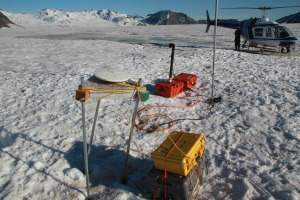
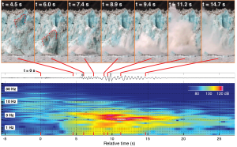

Many of the most rapid losses of ice from glaciers in Alaska, Greenland, Antarctica, and elsewhere are driven by increases in the rates of iceberg calving and submarine melt. Glacier seismology is a rapidly developing field that can be used to study calving. In order to better the processes controlling mass loss at glacier termini, I participated in a study of Yahtse Glacier, a tidewater glacier on the Gulf of Alaska.


Using field data collected between 2009 and 2011, I identified the rate and importance of submarine terminus melt, the environmental factors that promote rapid calving, and the origins of calving-generated seismic signals. This project constituted the bulk of my doctoral research at the University of Alaska Fairbanks (UAF) Geophysical Institute and was led by my advisor, Chris Larsen, as well as by Mike West and Shad O’Neel.


The results of this work are described in three published, first-author papers in Geophysical Research Letters, JGR-Earth Surface and Earth and Planetary Science Letters, and in contributions to two other papers (see publications). As of July 2015, a sixth manuscript is in review at JGR-Earth Surface. The bulk of this work was funded by the National Science Foundation, while the collection of oceanographic data was supported by a grant I received from the UAF Center for Global Change.
Photographs from the St. Elias Range, in support of this project, are here. The short video blog post below, produced by AGU, summarizes some of the results of our 2012 paper in JGR.